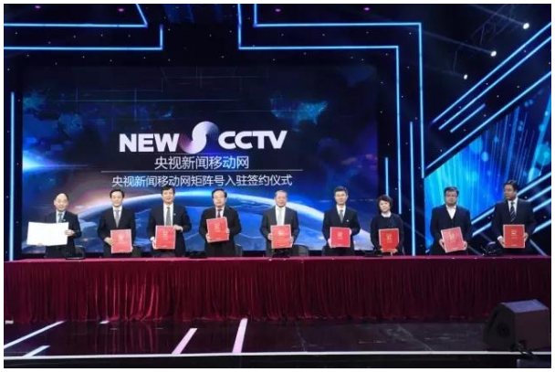
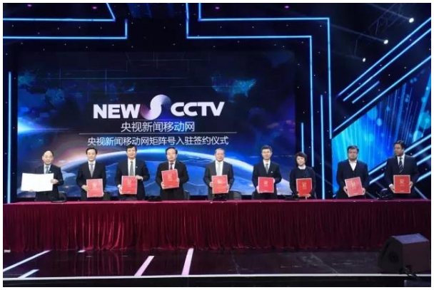

央视新闻移动网上线 37家广电机构入驻
2017-02-20
来源：央视新闻
昨日，央视新闻移动网矩阵号入驻签约仪式在北京举行。37家省级、计划单列市广电机构集体签约入驻央视新闻移动网，共同打造全国广电系统融媒体“联合舰队”。今日，央视新闻移动网将正式上线。
37家广电机构入驻签约
昨日，37家省级、计划单列市广电机构和中央电视台签署《央视新闻移动网合作框架协议》，集体签约入驻央视新闻移动网。
 

中央电视台副台长孙玉胜与37家机构负责人签署合作框架协议
移动互联时代，用户在移动端聚合。移动应用、社交媒体成为主要信息入口，“移动优先”已成业界共识。过去一年来，中央电视台加快建设移动融媒体新闻平台，依托在直播和视频领域的优势，全力打造VGC全球记者视频回传平台，搭建了业界领先的移动直播系统，并将于今日推出基于移动端的新闻网站和客户端——央视新闻移动网。
为入驻的“矩阵号”提供三大服务
央视新闻移动网对于用户而言，是一个巨量呈现微视频和移动直播的移动端网站；对于“矩阵号”平台的入驻机构而言，是一个电视与新媒体一体化生产、资源共享、高效分发的工作平台和通稿媒资系统。正式上线后，央视新闻移动网将为入驻“矩阵号”机构提供以下服务：
一是为入驻“矩阵号”的机构开通内容发布、视频直播等功能，对入驻内容进行专区类、主页式的展示。
二是为入驻“矩阵号”的机构开通媒资共享功能。央视新闻移动网建立集管理、搜索、授权、引用、转发等诸多功能于一体的媒资共享机制。在一定条件下，入驻机构将获得访问央视新闻移动网媒资库的权限，获取包括央视新闻新媒体在内的“矩阵号”平台上的海量视频与稿件资源。
三是建立自有用户数据库，为入驻“矩阵号”的机构开通用户画像功能。央视新闻移动网将收集用户接触时长、互动频率、地理位置等关键数据，建立以用户画像为核心的用户数据体系，进而建立更能真实地反映央视新闻移动网传播价值的效果评价体系，客观真实地反映广电机构的品牌价值、传播价值以及社会影响力、舆论引导力。
中央电视台新闻中心新媒体部主任杨继红介绍相关情况
开创融合发展新业态
开通矩阵号，吸纳机构账号入驻平台，共同打造电视新闻融媒体平台后，中央电视台将能大大改变电视新闻媒体资源分散、竞争力薄弱的现状，逐步摆脱对商业互联网平台的依赖，在稿源拓展、版权保护、媒资运营等领域拓展前所未有的发展空间，开创融合发展的全新业态。
中央电视台副总编辑兼新闻中心主任李挺致辞
央视主播海霞主持签约仪式
央视新闻移动网值得期待
央视新闻移动网正式上线后，还将进一步向全国广播、电视、报纸等媒体机构和涉及公共信息服务的相关政府部门开放，共同打造基于移动端的融媒体内容聚合平台。今年全国“两会”，央视新闻移动网将携手“矩阵号”入驻机构，为用户带来海量视频新闻资讯。届时，“矩阵号”发稿将同时呈现“央视新闻”和“矩阵号”入驻机构的标识。